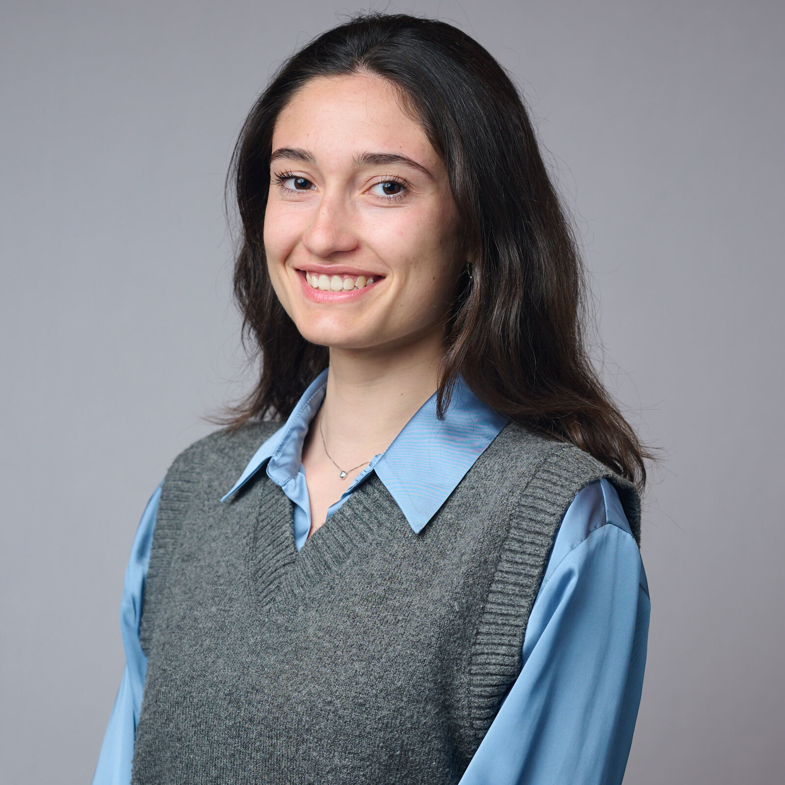

Hello, I'm
Rebecca Casati
PhD Student in Physics · Quantum Computing @ University of Milan
I am studying quantum computing algorithms and their applications to real-world problems, from maritime navigation to space exploration.
Professional Experience
PhD Student in Physics, Astrophysics and Applied Physics
Oct. 2024 - Sept. 2027University of Milan
Milan, Italy
- Scholarship: co-funded by NATO STO CMRE
- Project: Quantum computing algorithms for maritime and underwater applications.
- Group: Quantum Intelligence Lab (Supervisor: Prof. Enrico Prati)
Visiting Research Fellow
Oct. 2025 - Mar. 2026Waseda University
Tokyo, Japan
- Project: Quantum computing for quantum sensing with NV centers.
- Department: School of Fundamental Science and Engineering.
- Group: Quantum Sensing group, Tanii-lab (Supervisor: Prof. Tanii Takashi).
Teaching Assistant
Feb. - May 2025University of Milan
Milan, Italy
- Course: Foundations of Quantum Computing (Master's in AI).
- I taught introductory coding classes on programming quantum circuits with Pennylane.
Researcher - Collaborator
Mar. - July 2024University of Milan - Physics Department
Milan, Italy
- Fundings: Italian Space Agency (ASI).
- Project: CQES - Quantum Computers and Space Exploration.
- I solved space-related optimization problems (job shop scheduling) using D-Wave's quantum annealers.
Education
Master's in Artificial Intelligence for Science and Technology
University of Milan-Bicocca, University of Milan, University of Pavia
Oct. 2022 - Sept. 2024
Final Mark: 110/110 cum Laude
Thesis: Adiabatic Quantum Computing for Space Missions Scheduling.
Bachelor's degree in Physics
University of Milan-Bicocca
Sept. 2019 - Nov. 2022
Final Mark: 109/110
Thesis: Use of gold nanoparticles for neuronal stimulation.
Publications
Iterative Quantum Annealing for Job Shop Scheduling with a Directed Graph Representation
In: 2025 IEEE International Conference on Quantum Computing and Engineering (QCE). Vol. 01. 2025, pp. 2161-2169.
DOI: 10.1109/QCE65121.2025.00236Quantum Computing for Space Applications: a Selective Review and Perspective
In: EPJ Quantum Technology 12, 66 (2025).
DOI: 10.1140/epjqt/s40507-025-00369-8Exploiting adiabatic quantum computing in deep space missions
In: Journal of Physics: Conference Series. 2025, vol. 3017. 1., p. 012042.
DOI: 10.1088/1742-6596/3017/1/012042Quantum computing for deep space physics applications
In: Proceedings of the International Astronautical Congress, IAC. 2024, pp. 273-277.
DOI: 10.52202/078361-0033Neural Quantum Annealing for Real-World Quadratic Unconstrained Binary Optimization
In: 2024 IEEE International Conference on Quantum Computing and Engineering (QCE). Vol. 02. 2024, pp. 514–515.
DOI: 10.1109/QCE60285.2024.10382Event participations
Oral presenter
Albuquerque, New Mexico
QCE25 International Conference on Quantum Computing and Engineering - IEEE Quantum Week 2025
IEEE Institute of Electrical and Electronics Engineers
Selected participant
Sleat, Scotland
Quantum Machine Learning and Hamiltonian Simulation
ICMS International Centre for Mathematical Sciences
Oral presenter
Anaheim, California
Joint March Meeting and April Meeting - GPS Global Physics Summit 2025
APS American Physical Society
Oral presenter
Bologna, Italy
HPCQC2024 High Performance Computing and Quantum Computing Workshop 2024
CINECA
Poster presenter
Milan, Italy
IAC2024 International Astronautical Congress
IAF International Astronautical Federation
Conference Secretary and Poster presenter
Castiglioncello, Italy